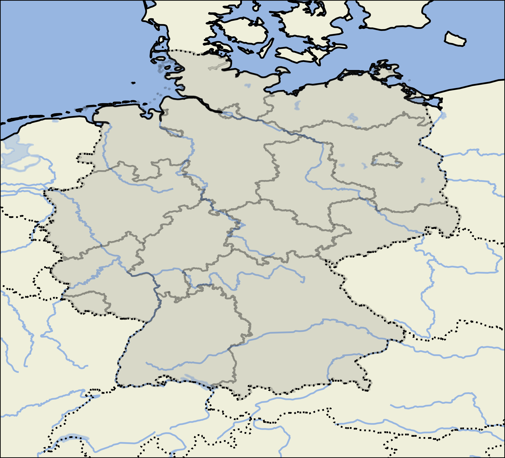

This application needs ~2GB of data in the project directory.
Should the data be downloaded now?
download
cancel
Temperature
Humidity
Germany
Baden-Württemberg
Bayern
Berlin
Brandenburg
Bremen
Hamburg
Hessen
Mecklenburg-Vorpommern
Niedersachsen
Nordrhein-Westfalen
Rheinland-Pfalz
Saarland
Sachsen
Sachsen-Anhalt
Schleswig-Holstein
Thüringen
timepoint
timerange
PNG
JPG
PDF
SVG
render
GIF
MP4
render
output_info
info
save
